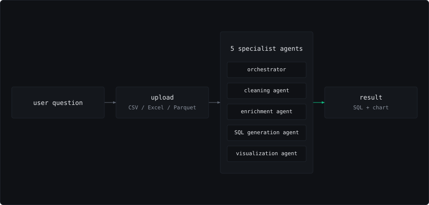

Problem and constraints
Business users needed ad-hoc analysis but lacked SQL skills, so analysts spent hours writing queries for simple questions like 'show me sales by region last quarter.'
Approach
Built a multi-agent system with cleaning, enrichment, SQL generation, and visualization specialists. Users upload any dataset and ask questions in natural language; the system handles data cleaning, generates SQL, and returns charts.
Architecture

Measured result
Enabled non-technical users to explore data without analyst intervention, removing the repetitive reporting requests that made up the ad-hoc queue.
| What | Value | Scope and source |
|---|---|---|
| commits shipped | 191 | single public repo, multi-agent analytics app |
| specialist agents | 5 | cleaning, enrichment, SQL generation and visualization over uploaded CSV, Excel and Parquet |